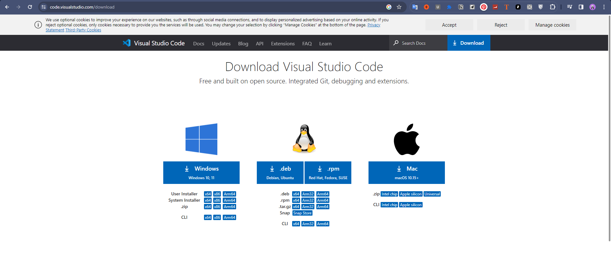
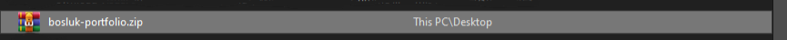
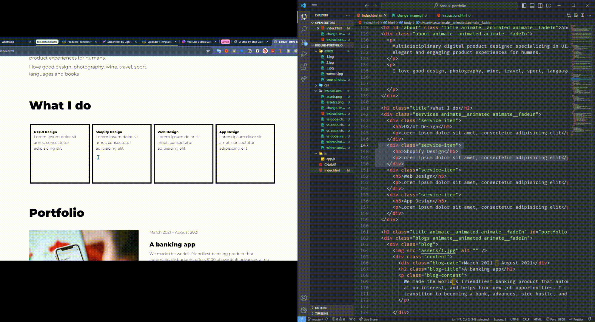

Editing HTML templates can be a daunting task, especially for beginners. However, with a step-by-step guide, the process becomes much more manageable. In this article, we will walk you through the process of editing HTML templates, from installation to making specific changes like altering text, images, removing sections, and modifying copyright information.
Before diving into the editing process, it's crucial to have a code editor installed on your computer. Popular choice is include Visual Studio Code. This editor provide a user-friendly interface for editing HTML code. You have to install the editor to edit HTML template.
After that you should unzip the template files on your editor .
To modify the text in an HTML template, open the template file in your code editor. Locate the section you want to edit and make the necessary changes. Remember to save the file after making any modifications.
You should write your name "Juia Doe" --> Your NAME
If your HTML template includes images, you might want to replace them with your own. Begin by uploading your desired images to the assets folder of your template. Then, find the code related to the image in your HTML file. Change the image names in the code to match the names of your uploaded images. Save the file, and the image will now display your new images.
Add the your image and change the path of image
Sometimes, you may want to remove certain sections or blocks from the HTML template. To do this, locate the corresponding code in your HTML file and select and delete it. Be cautious not to delete any essential code that could break the template's functionality. Always make a backup of the original file before making any significant changes.
Editing HTML templates may seem intimidating at first, but with a step-by-step guide, it becomes a straightforward process. By following the instructions provided in this article, you can successfully edit HTML templates to suit your specific needs. Remember to save your changes regularly and make backups of the original files to avoid any potential issues. Happy editing!